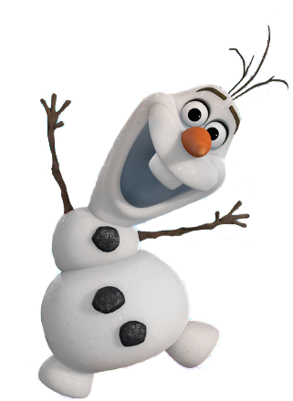

ELSA

Elsa
Elsa is the daughter of Agnarr and Iduna, older sister of Anna, and queen of Arendelle.
Elsa was born with the powers to manipulate ice and snow and used them to entertain her sister. However, Elsa's lack of control resulted in her living in fear of hurting anyone with her powers, and she spent much of her early life shut out from the world.
Though it pained her greatly to do so, Elsa also saw it necessary to distance herself from Anna, so there would be no risk of hurting her.
After her powers were exposed and nearly harmed several people, Elsa fled Arendelle to ensure such an incident never occurred again. In spite of her self-imposed exile, Elsa found peace, finally able to experiment with her powers without the fear of causing any more harm. Ultimately, Elsa was able to rekindle her relationship with her sister after learning how to fully control and appreciate her powers.

Anna
Anna is the daughter of Agnarr and Iduna, younger sister of Elsa, and princess of Arendelle. She was extremely close with Elsa, but an accident during their childhoods prompted their parents to separate them from each other and the outside world. During the long years that followed, Anna tried repeatedly to spend time with Elsa but to no avail. This isolated existence was made complete by the sudden deaths of Agnarr and Iduna, leaving Anna to truly fend for herself. Despite the tragedies she endured, Anna was still hopeful for the future. When Elsa fled the kingdom due to the exposure of her ice magic, Anna took it upon herself to bring her sister back, regardless of the potential danger. After Anna inadvertently showed Elsa the key to controlling her powers, the rift between the two sisters was at long last healed. She also began a romantic relationship with the ice harvester, Kristoff, who assisted in her journey.
OLAF
Olaf is a snowman built by Elsa. He is based on a similar snowman built by Elsa and her sister, Anna, when they were both young.
Though she was unaware of it, Elsa imbued Olaf with life, and the snowman proved instrumental in Anna's quest to find her sister.
Hans
Hans Westergaard[1] is the youngest of thirteen sons and prince of the Southern Isles. He had a difficult past, neglected by his brothers and raised without love.
As a result of his upbringing, Hans grew to be manipulative and was obsessed with obtaining power for himself, setting his sights on Arendelle.

Kristoff Bjorgman
Kristoff Bjorgman[1] is a Sami[3] ice harvester who, alongside his friend and reindeer, Sven, was raised by the trolls.
He generally kept to himself and only interacted with other humans when necessary, preferring the company of Sven.
As such, Kristoff only accompanied Anna on her quest to retrieve Elsa strictly as a business arrangement but would eventually develop feelings for the princess; to this end, he strove to ensure her safety as she worked to restore both summer and her bond with her estranged sister.
After summer's return, Kristoff and Anna began a romantic relationship.

top